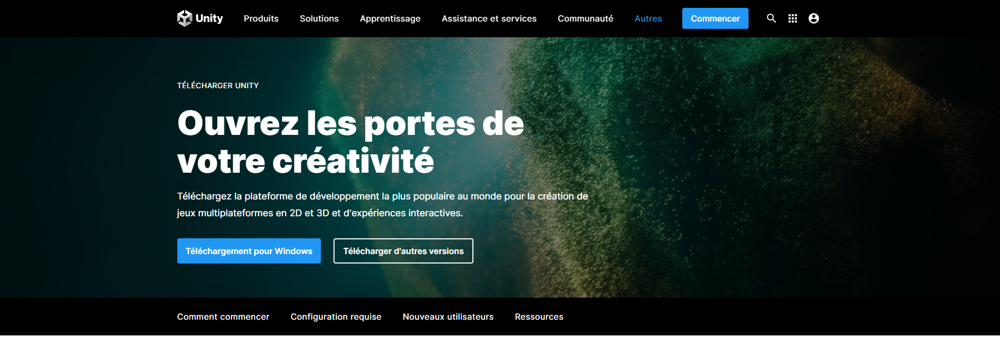
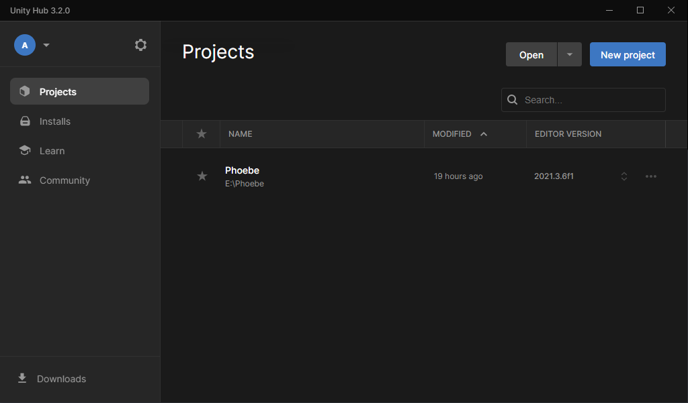
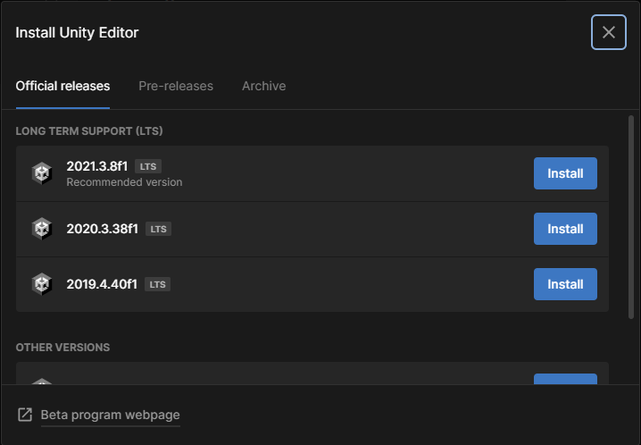
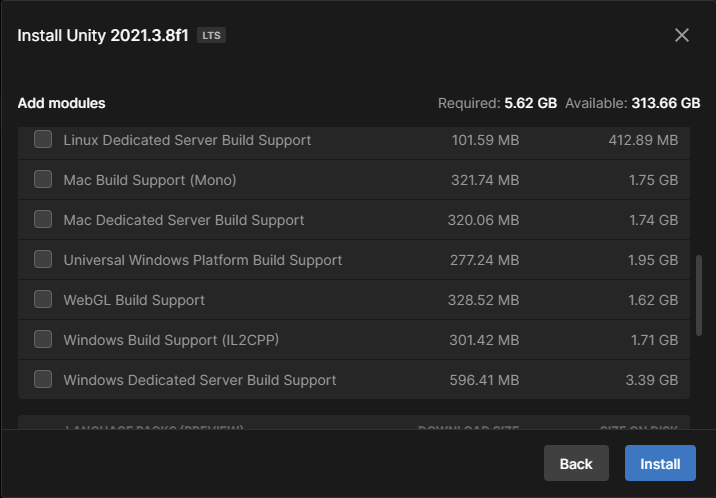
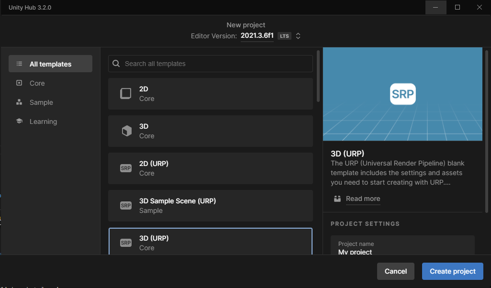
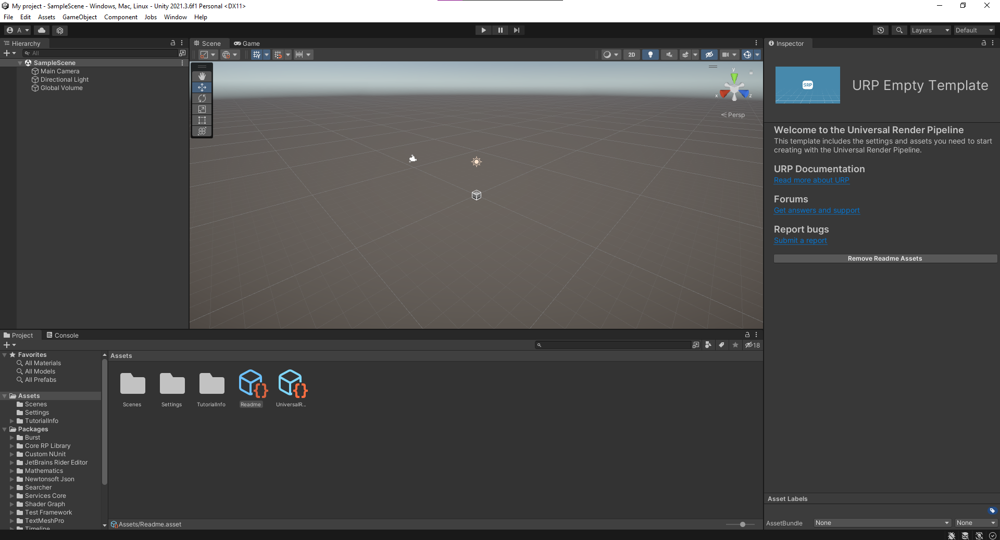

Démarrer un Projet sur Unity
Développer un jeu vidéo peut paraître comme une tâche très ardue. Mais à toute grande tâche, il y a une première étape. Très souvent, c'est de passer cette première étape qui libère l'Esprit et permet de commencer sérieusement le Projet.
Unity est un très bon logiciel de Développement de Jeux-Vidéos, avec beaucoup de libertés et de modularité; cependant, avec toutes les différentes versions disponibles de Unity, il est facile de se perdre dans le choix.
Ce blog va expliquer les premières étapes de la mise en place d'un Projet Unity, ainsi que les différents à prendre en compte.
Première il faut télécharger Unity (Évidemment); Cette partie est plutôt simple: il suffit de se rendre sur
https://unity.com/fr/download
Là vous y rencontrerez le bouton de téléchargement, je pense que je peux vous laisser deviner quoi faire. 
Après avoir installé "Unity Hub", le processus va devenir un chouïa plus compliqué. 
Premièrement, il faut installer une version de l'Éditeur Unity, parce que Hub ne sert que de distributeur des différentes versions. Allez dans l'onglet "Installs" pour ajouter une Version de l'Éditeur Unity sur votre Machine. Il faut ensuite choisir la version de Unity que l'on souhaite utiliser. Généralement il faut mieux choisir la dernière version "LTS".
Les versions LTS (Long Term Support) sont plus stables car l'équipe de Développement Unity continue de travailler dessus.

Ensuite, il faut choisir les différents modules à Installer. Généralement on se limite aux modules de Builds sur différentes Plateformes. (Windows, Linux, Mac, WebGL) L'installation prend pas mal de temps, étant donné les tailles de fichiers à télécharger.

Enfin on peut démarrer un Projet, pour ça, revenez dans l'onglet "Projects" et cliquez sur "New Project". Il y a différentes templates, vous pouvez choisir de créer un jeu en 2D ou en 3D.
 Là ce trouve un autre point de Confusion, les Render Pipelines. Il y a deux Render Pipelines : URP (Universal Render Pipeline) et HDRP (High Definition Render Pipeline) Dépendamment du style graphique que vous voulez adopter pour votre jeu, vous devrez choisir entre les deux.
URP offre une très grande ouverture et permet de coder vos propres shaders; cette Render Pipeline est aussi très performante. URP est plus adapté au jeux stylisés ou semi-réalistes.
HDRP est très facile d'utilisation et permet d'atteindre une très haute fidélité graphique; cependant si vous souhaitez coder vos propres shaders, je ne la recommande pas du tout. HDRP est plus adapté au jeux Réalistes.
Après avoir choisit votre Rendre Pipeline, vous pouvez enfin commencer à créer votre Jeu!
